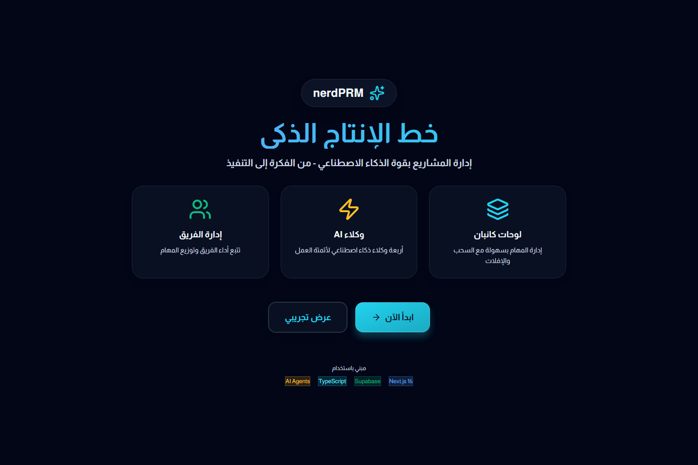

Landing surface
Arabic-first product framing
The landing surface presents the product around AI agents, team management, and collaborative boards instead of presenting AI as a loose afterthought.
Project resource management · Arabic-first AI product
nerdPRM is a product direction around project intake, task shaping, team visibility, and AI-assisted execution support. The public layer focuses on product framing and interface clarity.

Public evidence
The current public proof point is the landing screen captured from a safe local copy, combined with a module map derived from route and source inspection.
The landing surface presents the product around AI agents, team management, and collaborative boards instead of presenting AI as a loose afterthought.